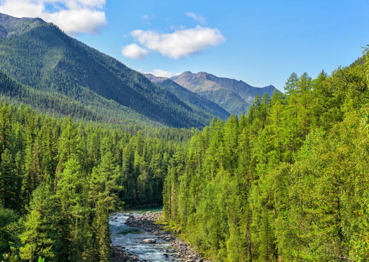
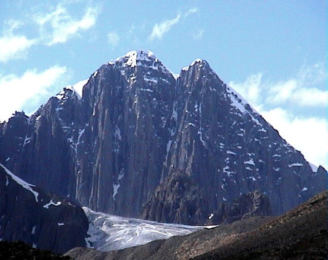

Bienvenue au A.G.A.L. Zoo Parc, créé en 2025 par Alessio, Gabin, Aleyna et Lucie qui se situe près de la merveilleuse ville Krasnoïarsk.
Ce Zoo vous propose d'observer des animaux de la région tels que les imposants ours bruns ou encore les majestueux loups au travers de deux zones typiques: La Montagne et La Forêt.
A.G.A.L. Zoo Parc est LA destination pour tous: Famille, Couple, Collègues, Amis et bien plus encore.
Découvrez les meilleurs tarifs afin de passer la meilleure visite possible dans la joie et le bonheur, le tout dans une immersion totale.
Nous avons donc des restaurants prets à vous accueillir ainsi que des logements. De ce fait, n'hésitez pas à regarder nos offres complémentaires.
Voici nos deux zones typiques du paysage local :
Dans cette zone du zoo, la forêt sibérienne est recréée pour plonger les visiteurs au cœur de la taïga, vaste étendue d’arbres et de conifères du nord de la Russie.
C’est un milieu à la fois sauvage et paisible, où vivent des animaux emblématiques tels que l’ours brun de Sibérie, le loup gris,le renard roux ou encore le grand-duc.
Ces espèces proviennent des régions forestières de Sibérie orientale et occidentale, où le froid et la nature dense façonnent la vie animale tout au long de l’année.


Dans cette zone du zoo, les montagnes sibériennes sont reconstituées pour faire découvrir aux visiteurs un environnement sauvage de pics enneigés, de rochers escarpés et de vallées glaciales.
C’est un milieu rude mais majestueux, où vivent des animaux adaptés au froid et à l’altitude, tels que le léopard des neiges, le bouquetin de Sibérie, le lynx boréal ou encore l’aigle royal.
Ces espèces proviennent principalement des massifs de l’Altaï et de la Iablonovy, régions montagneuses de Sibérie où la vie persiste malgré les conditions extrêmes.